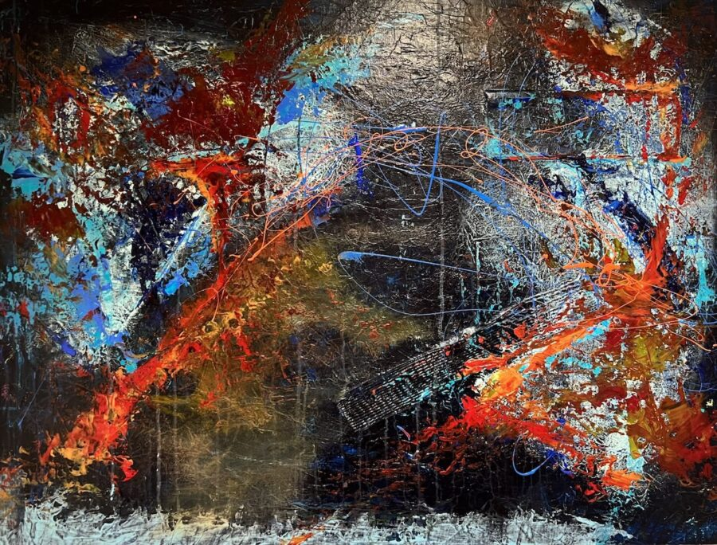

Art Speaks: Abstract Expressions
A curated group exhibition for this moment in time, a space for honesty, reflection, and emotional depth.In a world that feels loud and uncertain, we invited artists to express what words alone cannot. Expression may be fierce or fragile, joyful or aching, intimate or expansive. It may speak of identity, memory, resistance, longing, or hope.
This exhibition explores abstraction not just as a style, but as a release, a way to process lived experience and the emotional charge of simply being human.
Presented by VibrantCast, where art is accessible, affordable, and meant to be experienced and owned.
We connect people to emerging talent through digital discovery and live immersive events, spotlighting the meaning behind the work and the artists who create it.
VibrantCast is a place where everyone is welcome and creativity is held in the highest regard. We invite you to find what moves you and start your collection.